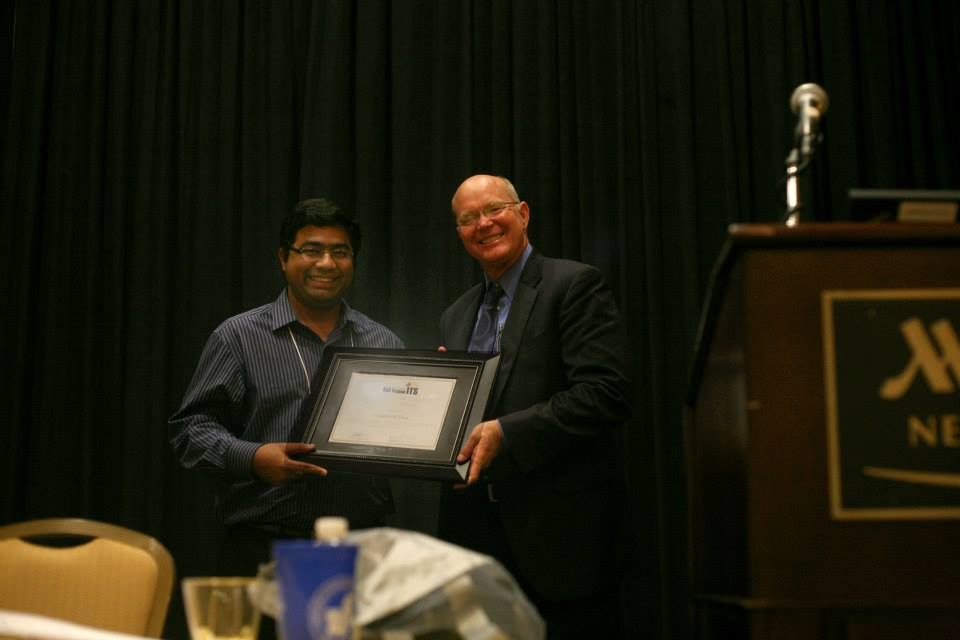

-
Significant Awards
-
2013
-
2013 GRITS First Place Award: The Gulf Region Intelligent Transportation Society (GRITS), a non-profit corporation founded in 2009 as a chapter of the Intelligent Transportation Society of America, awarded three gradute students from Mississippi, Louisiana and Alabama. Subasish Das was awarded First Place Scholarship for academic excellence, extracurricular activities, and written essay supporting the mission and goals of the GRITS chapter. Subasish received his certificate from ITS America CEO Scott Belcher at GRITS 2013 Annual Meeting held in New Orleans on November 23-25, 2013. The award includes a certificate and full coverage of the cost of attending the annual meeting and award prize of $1,500.
Subasish Das (Left) with ITS America CEO Scott Belcher
Award picture link Newsletter link
-
-
2014
-
2014 SASHTO Outstanding Graduate Student Research Award: The Southeastern Association of State Highway and Transportation Officials (SASHTO) Outstanding Graduate Student Research Award recognizes graduate students who have conducted high quality research in the broad area of transportation. The award includes a certificate and full coverage of the cost of attending the conference. The travel expense, conference registration, hotel, and meals are covered by the award. The overall value of the award is $1,500. Subasish Das was awarded 2014 SASHTO Graduate Student Research Award from LTRC Foundation. Subasish presented his paper Analyzing At-fault Crash-Prone Drivers of Louisiana Associated with Multiple Crashes at the SASHTO Conference held in New Orleans from August 24-27, 2014. Subasish received his certificate from Louisiana DOTD’s Secretary Sherri LeBas.

Subasish Das with LaDOTD Secretary LeBas and other award winners
SASHTO conference brochure Award picture link -
2014 GRITS Award: Subasish Das was awarded 2014 GRITS Award for academic excellence, extracurricular activities, and written essay on cyberphysical roadways. The award includes a certificate and award prize of $1,500.
Announcement link -
2015
-
2014 AASHTO High Impact Research Sweet Sixteen Award: Dr. Xiaoduan Sun and Subasish Das were awarded by AASHTO for their high value research. Two of their research projects "Safety Improvement from Edge Lines on Rural Two-Lane Highways / A Comprehensive Study on Pavement Edge Line Implementation" were announced by the AASHTO Research Advisory Committee (RAC) as being awarded a spot on its 2014 Sweet Sixteen High Value Research Projects list. The award was given at the 94th TRB Annual Meeting in Washington DC in January, 2015.
Newsletter link -
2015 Eno Fellowship: Each summer, the Eno Future Leader Development Conference brings a select group of the top graduate students in transportation and related disciplines to the nation’s capital for an introduction to how transportation policy and programs are formed. During their week in Washington, the “Eno Fellows” meet with leaders from key transportation constituencies, including the U.S. Department of Transportation and its modal administrations, congressional committees, industry associations, and numerous advocacy groups. The Fellows also tour the local transportation facilities, discuss career planning with the Eno Board of Directors, and get to know one another in informal settings. At the end of the week, they are welcomed into the Eno Alumni Network that includes hundreds of transportation leaders representing all modes and areas of the country. The Network offers valuable resources for continuing education, involvement in policy issues, and career development. Subasish Das was selected as one out of twenty 2015 Eno Fellows. The overall value of the award is $5,000.
2015 Eno fellowship brochure Newsletter link
-
-
Deep South ITS Scholarship [2011-2014]: Subasish Das received this prestigious scholarship for four consecutive years (2011-2014).
-
Travel Award for 9th Graduate Academic Forum of Beihang University [Declined]: Beijing University of Aeronautics and Astronautics arranged this competition to invite international graduate students (M.S. and PhD) in Civil and Transportation Engineering, to participate in the 9th Graduate Academic Forum of Beihang University, October 9-11, 2012 at Beihang University, Beijing, China. Subasish Das achieved this award in 2012.
Other Awards -